소음진동기사(구) (2019-04-27 기출문제)
1과목: 소음진동개론
1. 진동발생원의 진동을 측정한 결과, 진동가속도 진폭이 2×10-2m/sec2이었다. 이를 진동 가속도레벨(VAL)로 나타내면?
- 57dB
- 60dB
- 63dB
- 67dB
(정답률: 86%)

2. 일반적으로 송풍기 소음의 기본주파수(f, Hz)를 구하는 식으로 옳은 것은? (단, n: 회전날개수, R: 회전수(rpm))
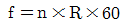
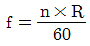
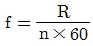
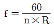
(정답률: 95%)
3. 소음공해의 특징과 가장 거리가 먼 것은?
- 감각적 공해이다.
- 대책 후에 처리할 물질이 거의 발생되지 않는다.
- 광범위하고, 단발적이다.
- 축적성이 없다.
(정답률: 78%)
4. 소음의 영향에 관한 설명으로 가장 거리가 먼 것은?
- 노인성난청은 소음성난청보다 높은 8000Hz부근에서 청력손실이 일어나기 때문에 C5-dip도 인정된다.
- 일반적으로 소음성 난청은 장기간에 걸친 소음폭로로 기인되기 때문에 노인성난청도 가미된다.
- 소음성난청은 대개 음을 수감하는 와우각 내의 감각세포 고장으로 발생한다.
- 110dB(A) 이상의 큰 소음에 일시적으로 폭로되면 회복 가능한 일시성의 청력손실이 일어나는데, 이를 소음성의 일시적 난청(TTS)이라 한다.
(정답률: 82%)
5. 귀의 각 기관과 그 기능으로 옳지 않은 것은?
- 고막 : 진동판
- 외이도 : 공명기
- 이관 : 기압조정
- 와우각 : 음압증폭
(정답률: 74%)
6. 평균 음압이 3515N/m2이고, 특정 지향음압이 6250N/m2일 때 지향지수는?
- 약 3.8dB
- 약 5.0dB
- 약 6.3dB
- 약 7.2dB
(정답률: 64%)
7. 음장에 관한 설명중 가장 거리가 먼 것은?
- 확산음장은 잔향음장에 속하며, 밀폐된 실내의 모든 표면에서 입사음이 거의 100% 반사된다면 실내의 모든 위치에서 음의 에너지 밀도는 일정하다.
- 근음장은 음원에서 근접한 거리에서 발생하며, 음원의 크기, 주파수, 방사면의 위상에 크게 영향을 받는 음장이다.
- 자유음장은 근음장 중 역2승법칙이 만족되는 구역이다.
- 근음장에서의 입자속도는 음의 전파방향과 개연성이 없고, 음의 세기는 음압의 2승과 비례관계가 거의 없다.
(정답률: 77%)
8. 충분히 넓은 벽면에 음파가 입사하여 일부과 투과할 때 입사음의 세기를 IA, 투과음의 세기를 IB라고하면 투과손실(TL: transmission loss)은?
- TL=10log(IA/IB)
- TL=10log(IB/IA)
- TL=20log(IA/IB)
- TL=20log(IB/IA)
(정답률: 66%)
9. 다음은 기상조건에서 공기흡음에 의해 일어나는 감쇠치에 관한 설명이다. ( )안에 알맞은 것은? (단, 바람은 무시하고, 기온은 20℃이다.)
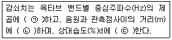
- ㉠비례, ㉡비례, ㉢반비례
- ㉠반비례, ㉡비례, ㉢비례
- ㉠비례, ㉡반비례, ㉢반비례
- ㉠반비례, ㉡비례, ㉢반비례
(정답률: 84%)
10. 소음의 영향ㆍ평가에 관한 용어 설명으로 적합한 것은?
- NC는 주로 실외소음 평가척도로 사용한다.
- LN은 감각소음레벨을 의미한다.
- NNI는 도로교통 소음지수를 의미한다.
- NEF는 항공기 소음의 평가척도로 사용된다.
(정답률: 65%)
11. 다음 중 소음통계레벨에 관한 설명으로 옳지 않은 것은?
- 전체 측정값 중 환경소음레벨을 초과하는 소음도 총합의 산술평균값을 말한다.
- 소음레벨의 누적도수분포로부터 쉽게 구할 수 있다.
- %값이 낮을수록 큰 레벨을 나타내어 L10 ＞ L50 ＞ L90의 관계가 있다.
- 일반적으로 L90, L50, L10 값은 각각 배경소음, 중앙값, 침입소음의 레벨값을 나타낸다.
(정답률: 56%)
12. 백색잡음(white noise)에 관한 설명으로 옳징 않은 것은?
- 보통 저음역과 중음역대의 음이 상대적으로 고음역보다 음량이 높아 인간의 청각면에서는 핑크잡음이 백색잡음보다 모든 주파수대에 동일음량으로 들린다.
- 인간이 들을 수 있는 모든 소리를 혼합하면 주파수, 진폭, 위상이 균일하게 끊임없이 변하는 완전 랜덤 파형을 형성하며 이를 백색잡음이라 한다.
- 단위 주파수 대역(1Hz)에 포함되는 성분의 세기가 전 주파수에 걸쳐 일정한 잡음을 말한다.
- 모든 주파수대에 동일한 음량을 가지고 있는 것임에도 불구하고, 저음역 쪽으로 갈수록 에너지 밀도가 높아 저음역 쪽의 음성분이 더 많은 것으로 들린다.
(정답률: 69%)
13. 중심주파수가 500Hz일 때 1/1옥타브밴드분석기(정비형 필터)의 상한 주파수는?
- 약 710Hz
- 약 760Hz
- 약 810Hz
- 약 860Hz
(정답률: 80%)
14. 소음원의 PWL이 각각 69dB, 75dB, 79dB, 84dB일 때 소음의 POWER평균치는?
- 77dB
- 80dB
- 84dB
- 86dB
(정답률: 73%)
15. 굳고 단단한 넓은 평야지대를 기차가 달리고 있다. 철로와 주변지대는 완전한 평면이며, 철로 중심으로부터 20m 떨어진 곳에서의 음압레벨이 70dB이었다면, 이음원의 음향파워레벨은? (단, 음파가 전파되는데 방해가 되는 것은 없다고 가정)
- 약 107dB
- 약 104dB
- 약 91dB
- 약 88dB
(정답률: 57%)
16. 다음 매질 중 일반적으로 소리전파 속도가 가장 느린 것은?
- 공기(20℃)
- 수소
- 헬륨
- 물
(정답률: 90%)
17. 자유공간에 있는 무지향성 점음원의 음향출력이 2배로 되고, 측정점과 음원의 거리도 2배로 되었다고 하면 음압레벨은 처음에 비해 얼마만큼 변화하는가?
- 2dB감소
- 3dB감소
- 6dB감소
- 9dB감소
(정답률: 69%)
18. 음압의 실효치가 70N/m2인 평면파의 경우 음의 세기는 약 몇 W/m2이 되는가? (단, 표준대기에서 ρC=406kg/m2ㆍs로 계산할 것)
- 16
- 12
- 8
- 4
(정답률: 64%)
19. 청각기관에 관한 설명 중 옳지 않은 것은?
- 중이에서 음의 전달매질은 고체이다.
- 추골, 침골, 등골은 중이에 해당한다.
- 외이도는 일종의 공명기로 소리를 증폭, 고막을 진동시킨다.
- 내이의 고실은 소리의 진폭과 힘(진동음압)을 약 10~20배 정도 증가시켜 뇌신경으로 전달한다.
(정답률: 72%)
20. 진동에 의한 생체 영향 요인으로 고려할 사항과 거리가 먼 것은?
- 진동의 진폭
- 진동의 주파수
- 폭로시간
- 공명
(정답률: 72%)
2과목: 소음방지기술
21. A실의 규격이 10m(L)×10m(W)×5m(H)이다. 이 실의 잔향시간이 1.5초일 때, 실내 흡음력(m2)은?
- 54m2
- 64m2
- 74m2
- 84m2
(정답률: 83%)
22. A콘크리트 벽체의 면적이 1000m2이고, 이 벽체의 투과손실은 40dB이다. 이 벽체에 벽체면적의 1/100을 환기구로 할 때 총합 투과손실은?
- 50dB
- 30dB
- 20dB
- 10dB
(정답률: 74%)
23. 날개수 12개인 송풍기가 1200rpm으로 운전되고 있다. 이 송풍기의 출구에 단순 팽창형 소음기를 부착하여 송풍기에서 발생하는 기본음에 대하여 최대 투과손실 20dB을 얻고자 한다. 이 때 소음기의 팽창부 길이는 (단, 관로 중의 기체 온도는 22℃이다.)
- 0.32m
- 0.36m
- 0.41m
- 0.43m
(정답률: 58%)
24. 다음과 같이 방음벽을 설치한다고 할 때 경로치(δ)는 약 얼마인가?
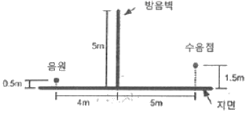
- 3.0m
- 3.5m
- 4.0m
- 4.6m
(정답률: 81%)
25. fan날개수가 30개인 송풍기가 1000rpm으로 운전하고 있을 때 이 송풍기의 기본음 주파수는?
- 125Hz
- 250Hz
- 500Hz
- 1000Hz
(정답률: 90%)
26. 그림과 같이 방음 울타리의 장점(O)과 음원(S), 수음점(R)이 일직선상에 있다고 할 때, 프레즈널 수(Fresnael Number) N은?
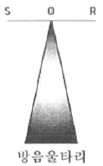
- 0
- 4
- 6
- 10
(정답률: 77%)
27. 다음 중 소음기의 성능을 표시하는 용어에 관한 정의로 옳지 않은 것은?
- 삽입손실치(IL) : 소음원에 소음기를 부착하기 전과 후의 공간상 어떤 특정 위치에서 측정한 음압레벨의 차와 그 측정위치로 정의된다.
- 투과손실치(TL) : 소음기에 입사한 음향출력에 대한 소음기에 투과된 음향 출력의 비를 자연대수로 취한 값으로 정의 된다.
- 감쇠치(△L) : 소음기 내의 두지점 사이의 음향파워의 감쇠치로 정의 된다.
- 동적삽입손실치(DIL) : 정격유속(rated flow) 조건하에서 측정하는 것을 제외하고는 삽입손실치와 똑같이 정의 된다.
(정답률: 77%)
28. 다음 중 섬유질 흡음재의 고유 유동저항 σ을 구하는 관계식으로 옳은 것은? (단, S는 시료 단면적, L은 시료두께, Q는 체적속도, △P는 시료 전후의 압력차이다.)
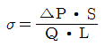
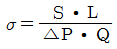
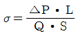
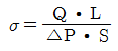
(정답률: 48%)
29. 방음벽은 벽면 또는 벽 상단의 음향특성에 따라 종류별 분류가 가능하다. 다음 중 방음벽 분류에 해당하지 않는 것은?
- 반사형
- 간섭형
- 공명형
- 팽창형
(정답률: 71%)
30. 음향투과등급(sound transmission class)에 관한 설명으로 옳지 않은 것은?
- 잔향실에서 1/3 옥타브 대역으로 측정한 투과손실로부터 구한다.
- 500Hz의 기준곡선값이 해당 자재의 음향투과 등급이 된다.
- 단 하나의 투과손실값도 기준곡선 밑으로 8dB을 초과해서는 안된다.
- 기준곡선 밑의 각 주파수 대역별 투과손실과 기준곡선값과의 차의 산술평균이 10dB이내이어야 한다.
(정답률: 64%)
31. 입사음이 75%는 흡음, 10%는 반사, 그리고 15%는 투과시키는 음향재료를 이용하여 방음벽을 만들었다고 할 때, 이 방음벽의 투과손실(dB)은?
- 약 15dB
- 약 10dB
- 약 8dB
- 약 1dB
(정답률: 72%)
32. 무한 선음원인 도로변에 설치한 유한길이 방음벽 500Hz에서의 투과손실치(TL)가 30dB, 회절감쇠치(Lda)가 15dB이고 방음벽으로 차음된 관측값(ø)을 120°라 할 때, 방음벽 설치에 따른 차음효과(△L)는?
- 15dB
- 9.5dB
- 7.3dB
- 4.4dB
(정답률: 37%)
33. 실내에 설치되어 있는 유체기계에서 유체유동으로 소음을 발생시키고 있다. 이에 대한 소음 저감대책으로 적당하지 않은 것은?
- 유속을 느리게 한다.
- 압력의 시간적 변화를 완만하게 한다.
- 유체유동 시 유량밸브를 가능한 빨리 개폐시킨다.
- 유체유동 시 공동현상이 발생하지 않도록 한다.
(정답률: 91%)
34. 관로내에서 음향에너지를 흡수시켜 출구로 방출되는 음향파워레벨을 작게하는 소음기는?
- 흡음 덕트형 소음기
- 팽창형 소음기
- 간섭형 소음기
- 공명형 소음기
(정답률: 81%)
35. 균질인 단일벽의 두께를 4배로 할 경우 일치효과의 한계주파수 변화로 옳은 것은? (단, 기타 조건은 일정)
- 원래의 1/4
- 원래의 1/2
- 원래의 2배
- 원래의 4배
(정답률: 69%)
36. 흡음재료의 선택 및 사용상 유의점으로 옳은 것은?
- 흡음재료를 벽면에 부착 시 전체 내벽에 분산 부착하는 것보다 한 곳에 집중하는 것이 좋다.
- 흡음 tex등은 못으로 시공하는 것보다 전면을 접착제로 부착하는 것이 좋다.
- 다공질 재료의 경우 표면에 종이를 입혀 사용하도록 한다.
- 다공질 재료의 표면을 도장하면 고음역에서 흡음율이 저하한다.
(정답률: 73%)
37. 연결관과 팽창실의 단면적이 각각 A1, A2인 팽창형 소음기의 투과손실(TL)은? (단, m=A2/A1, k=(2πf)/c, L:팽창부 길이, f:대상주파수, c:음속)
- TL = 10log[1+0.25{m-(1/m2)} sin2kL]dB
- TL = 10log[1+4{m-(1/m)} sin2kL dB
- TL = 10log[1+0.25{m-(1/m)}2 sin2kL]dB
- TL = 10log[1+4{m-(1-m)} sin kL]dB
(정답률: 73%)
38. 외부로부터 면적이 20m2인 벽을 통하여 음압레벨이 100dB인 확산음이 실내로 입사되고 있다. 실내의 흡음력은 25이 3m2이고 벽의 투과손실이 38dB일 때, 실내의 읍압레벨은?(오류 신고가 접수된 문제입니다. 반드시 정답과 해설을 확인하시기 바랍니다.)
- 52dB
- 61dB
- 67dB
- 73dB
(정답률: 65%)
39. 흡음 덕트형 소음기에 관한 설명으로 옳은 것은?
- 최대감음 주파수는 λ＜D＜2λ 범위에 있다. (λ: 대상음의 파장(m), D: 덕트 내경(m))
- 통과유속은 20m/s 이하로 하는 것이 좋다.
- 송풍기 소음을 방지하기 위한 흡음 chamber 내의 흡음재 두께는 1인치로 하는 것이 이상적이다.
- 감음 특성은 저음역에서 좋다.
(정답률: 67%)
40. 흡음 덕트형 소음기에서 기류의 영향에 관한 설명으로 가장 적합한 것은?
- 음파와 같은 방향으로 기류가 흐르면 소음감쇠치의 정점은 고주파측으로 이동하면서 그 크기는 낮아 진다.
- 음파와 반대방향으로 기류가 흐르면 소음감쇠치의 정점은 고주파측으로 이동하면서 그 크기는 높아 진다.
- 음파와 같은 방향으로 기류가 흐르면 소음감쇠치의 크기는 속도의 제곱에 비례하여 커진다.
- 음파와 반대방향으로 기류가 흐르면 소음감쇠치의 크기는 속도의 세제곱에 반비례하여 작아진다.
(정답률: 73%)
3과목: 소음진동 공정시험 기준
41. 진동레벨계만으로 측정할 경우 진동레벨을 읽는 순간에 지시침이 지시판 범위 위를 벗어날 때 L10 진동레벨 계산방법으로 옳은 것은?
- 범위 위를 벗어난 발생빈도를 기록하여 3회 이상이면 레벨별 도수 및 누적도수를 이용하여 산정된 L10값에 1dB를 더해준다.
- 범위 위를 벗어난 발생빈도를 기록하여 6회 이상이면 레벨별 도수 및 누적도수를 이용하여 산정된 L10값에 1dB를 더해준다.
- 범위 위를 벗어난 발생빈도를 기록하여 3회 이상이면 레벨별 도수 및 누적도수를 이용하여 산정된 L10값에 2dB를 더해준다.
- 범위 위를 벗어난 발생빈도를 기록하여 6회 이상이면 레벨별 도수 및 누적도수를 이용하여 산정된 L10값에 2dB를 더해준다.
(정답률: 80%)
42. 진동레벨계만으로 측정시 진동레벨을 읽는 순간에 지시침이 지시판 범위 위를 벗어날 때 그 발생빈도가 5회 이였다. L10이 75dB(V)이라면 보정 후 L10은?
- 75dB(V)
- 77dB(V)
- 78dB(V)
- 80dB(V)
(정답률: 69%)
43. 표준음 발생기의 발생음의 오차 범위기준으로 옳은 것은?
- ±10dB 이내
- ±5dB 이내
- ±1dB 이내
- ±0.1dB 이내
(정답률: 77%)
44. 진동레벨의 성능기준에 관한 설명으로 옳지 않은 것은?
- 측정가능 주파수 범위는 1~90Hz상이어야 한다.
- 측정가능 진동레벨 범위는 45~120dB이상이어야 한다.
- 진동픽업의 횡감도는 규정주파수에서 수감축 감도에 대한 차이가 10dB이상이어야 한다. (연직특성)
- 레벨레인지 변환기가 있는 기기에 있어서 레벨레인지 변환기의 전환오차는 0.5dB이내 이어야 한다.
(정답률: 77%)
45. 환경기준 중 소음측정방법 중 측정시간 및 측정지점수 기준으로 옳은 것은?(오류 신고가 접수된 문제입니다. 반드시 정답과 해설을 확인하시기 바랍니다.)
- 낮 시간대(06:00~22:00)에는 당해지역 소음을 대표할 수 있도록 측정지점수를 충분히 결정하고, 각 측정지점에서 2시간 이상 간격으로 2회 이상 측정하여 산술평균한 값을 측정 소음도로 한다.
- 낮 시간대(06:00~22: 00)에는 당해지역 소음을 대표할 수 있도록 측정지점수를 충분히 결정하고, 각 측정지점에서 2시간 이상 간격으로 4회 이상 측정하여 산술평균한 값을 측정 소음도로 한다.
- 밤 시간대(22:00~06:00)에는 낮 시간대에 측정한 측정지점에서 4시간 이상 간격으로 2회 이상 측정하여 산술평균한 값을 측정소음도로 한다.
- 밤 시간대(22:00~06:00)에는 낮 시간대에 측정한 측정지점에서 2시간 간격으로 2회이상 측정하여 산술 평균한 값을 측정소음도로 한다.
(정답률: 16%)
46. 소음진동공정시험기준상 발파진동 측정자료 평가표 서식에 기재되어 있는 항복이 아닌 것은?
- 폭약의 종류
- 발파횟수
- 폭약의 제조회사
- 폭약의 1회 사용량(kg)
(정답률: 73%)
47. 열차통과시 배경진동레벨이 65dB(V)이고, 최고진동레벨을 측정한 결과 72dB(V), 73dB(V), 71dB(V), 69dB(V), 74dB(V), 75dB(V), 67dB(V), 77dB(V), 80dB(V), 82dB(V), 76dB(V), 79dB(V), 78dB(V)이다. 철도진동레벨은?
- 74dB(V)
- 75dB(V)
- 77dB(V)
- 79dB(V)
(정답률: 67%)
48. 다음은 철도진동 측정자료 분석에 관한 설명이다. ( )안에 가장 적합한 것은?
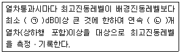
- ㉠ 10 ㉡ 5
- ㉠ 10 ㉡ 10
- ㉠ 5 ㉡ 5
- ㉠ 5 ㉡ 10
(정답률: 75%)
49. 다음 중 항공기소음 측정자료 평가표 서식에 기재되어야 하는 사항으로 가장 거리가 먼 것은?
- 비행횟수
- 비행속도
- 측정자의 소속
- 풍속
(정답률: 69%)
50. 동전형 픽업에 관한 설명으로 거리가 먼 것은? (단, 압전형 픽업과 비교 시)
- 픽업의 출력임피던스가 큼
- 중저주파역(1kHz 이하)의 진동 측정(속도, 변위)에 적합함
- 고유진동수가 낮음(일반적으로 10~20Hz)
- 변압기 등에 의해 자장이 강하게 형성된 장소에서의 진동측정은 부적합함
(정답률: 60%)
51. 다음은 “지발발파”의 용어의 정의이다. ( )안에 알맞은 것은?
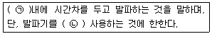
- ㉠ 수초 ㉡ 1회
- ㉠ 수초 ㉡ 3회
- ㉠ 수시간 ㉡ 1회
- ㉠ 수시간 ㉡ 3회
(정답률: 84%)
52. 다음은 항공기소음관리기준 측정방법 중 측정자료 분석에 관한 설명이다. ( )안에 알맞은 것은?
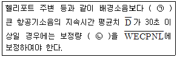
- ㉠5dB이상 ㉡ [+10log(
 /20}]
/20}] - ㉠10dB이상 ㉡ [+10log(
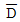
/20}] - ㉠5dB이상 ㉡ [+20log(
 /20}]
/20}] - ㉠10dB이상 ㉡ [+20log(
 /20}]
/20}]
(정답률: 56%)
53. 항공기 소음한도 측정결과 일일 단위의 WECPNL이 86이다. 일일 평균최고소음도가 93dB(A)일 때, 1일간 항공기의 등가통과 횟수는?
- 100회
- 110회
- 120회
- 130회
(정답률: 85%)
54. 항공기소음관리기준 측정방법 중 측정점에 관한 설명으로 옳지 않은 것은?
- 그 지역의 항공기소음을 대표할 수 있는 장소나 항공기 소음으로 인하여 문제를 일으킬 우려가 있는 장소를 택하여야 한다.
- 측정지점 반경 3.5m 이내는 가급적 평활하고, 시멘트 등으로 포장되어 있어야 하며, 수풀, 수림, 관목 등에 의한 흡음의 영향이 없는 장소로 한다.
- 측정점은 지면 또는 바닥면에서 5~10m 높이로 한다.
- 상시측정용의 경우에는 주변환경, 통행 타인의 촉수 등을 고려하여 지면 또는 바닥면에서 1.2~5.0m 높이로 할 수 있다.
(정답률: 85%)
55. 배출허용기준 중 소음 측정조건에 있어서 손으로 소음계를 잡고 측정할 경우 소음계는 측정자의 몸으로부터 얼마 이상 떨어져야 하는가?
- 0.2m 이상
- 0.3m 이상
- 0.4m 이상
- 0.5m 이상
(정답률: 89%)
56. 소음계중 지시계기의 성능기준에 관한 설명으로 옳지 않은 것은?
- 지시계기는 지침형 또는 디질털형이어야 한다.
- 지침형에서는 유효지시범위가 5dB 이상이어야 한다.
- 디지털형에서는 숫자가 소수점 한자리까지 표시되어야 한다.
- 지침형에서는 1dB 눈금간격이 1mm이상으로 표시되어야 한다.
(정답률: 83%)
57. 소음진동공정시험기준상 소음과 관련된 용어의 정의로 옳지 않은 것은?
- 지시치 : 계기나 기록지 상에서 판독한 소음도로서 실효치(rms)를 말한다.
- 소음도 : 소음계의 청감보정회로를 통하여 측정한 지시치를 말한다.
- 평가소음도 : 측정소음도에 배경소음을 보정할 후 얻어진 소음도를 말한다.
- 등가소음도 : 임의의 측정시간동안 발생한 변동소음의 총 에너지를 같은 시간 내의 정상 소음의 에너지로 등가하여 얻어진 소음도를 말한다.
(정답률: 85%)
58. 배출허용기준 진동측정방법 중 시간의 구분은 보정표의 시간별 항목의 기준에 따라야 하는데 가동시간으로 가장 적합한 것은?
- 측정 당일전 30일간의 정상가동시간을 산술평균한다.
- 측정 3일전 20일간의 정상가동시간을 산술평균한다.
- 측정 5일전 30일간의 정상가동시간을 산술평균한다.
- 측정 7일전 20일간의 정상가동시간을 산술평균한다.
(정답률: 73%)
59. 환경기준 중 소음측정방법에서 “도로변지역”에 관한 설명으로 옳은 것은?
- 도로단으로부터 차선수 × 10m로 한다.
- 도로단으로부터 차선수 × 15m로 한다.
- 고속도로 또는 자동차 전용도로의 경우에는 도로단으로부터 200m 이내의 지역을 말한다.
- 고속도로 또는 자동차 전용도로의 경우에는 도로단으로부터 250m 이내의 지역을 말한다.
(정답률: 83%)
60. 발파진동 측정시 디지털 진동자동분석계를 사용할 경우 배경진동레벨을 정하는 기준으로 옳은 것은?
- 샘플주기를 0.1초 이하로 놓고 5분이상 측정하여 자동 연산ㆍ기록한 80%범위의 상단치인 L10값을 그 지점의 배경진동레벨로 한다.
- 샘플주기를 0.1초 이하로 놓고 발파진동의 발생기간동안 측정하여 자동 연산ㆍ기록한 최고치를 그 지점의 배경진동레벨로 한다.
- 샘플주기를 1초 이내에서 결정하고 5분이상 측정하여 자동 연산ㆍ기록한 80%범위의 상단치인 L10값을 그 지점의 배경진동레벨로 한다.
- 샘플주기를 1초 이내에서 결정하고 발파진동의 발생기간동안 측정하여 자동 연산ㆍ기록한 최고치를 그 지점의 배경진동레벨로 한다.
(정답률: 65%)
4과목: 진동방지기술
61. 공기스프링에 관한 설명으로 옳지 않은 것은?
- 하중의 변화에 따라 고유진동수를 일정하게 유지할 수 있다.
- 자동제어가 가능하다.
- 공기누출의 위험성이 없다.
- 사용진폭이 적은 것이 많으므로 별도의 댐퍼가 필요한 경우가 많다.
(정답률: 77%)
62. 감쇠비를 ζ라 할 때 대수감쇠율을 나타낸 식은?
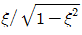
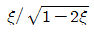
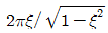
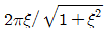
(정답률: 70%)
63. 무게가 1950N, 회전속도 1179rpm의 공기압축기가 있다. 방진고무의 지지점을 6개로 하고, 진동수비가 2.9라 할 때 고무의 정적수축량은? (단, 감쇠는 무시)
- 0.35cm
- 0.40cm
- 0.55cm
- 0.75cm
(정답률: 71%)
64. 다음 ( )안에 들어갈 말로 옳은 것은?
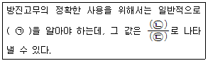
- ㉠ 정적배율 ㉡ 동적스프링정수 ㉢ 정적스프링정수
- ㉠ 동적배율 ㉡ 정적스프링정수 ㉢ 동적스프링정수
- ㉠ 동적배율 ㉡ 동적스프링정수 ㉢ 정적스프링정수
- ㉠ 정적배율 ㉡ 정적스프링정수 ㉢ 동적스프링정수
(정답률: 77%)
65. 발파시 지반의 진동속도 V(cm/s)를 구하는 관계식으로 옳은 것은? (단, K,n : 지질암반 조건, 발파조건 등에 따르는 상수, W: 지발당 장약량(kg), R : 발파원으로부터의 거리(m), b=1/2 또는 1/3)
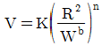
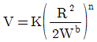
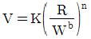
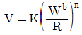
(정답률: 65%)
66. 진동방지대책을 발생원, 전파경로, 수진측 대책으로 분류할 때, 다음 중 발생원 대책으로 거리가 먼 것은?
- 기계의 가진력에 의한 전달을 감소하기 위해 방진 스프링을 사용한다.
- 저진동 기계로 교체한다.
- 장비에 운전하중을 고려하여 부가중량을 가한 관성베이스를 적용한다.
- 수진점 근처에 방진구를 파고, 모래충진을 통해 지반을 개량한다.
(정답률: 79%)
67. 그림과 같이 잘량이 m인 물체가 양단고정보의 중앙에 달려 있을 때 이계의 등가스프링 정수는?
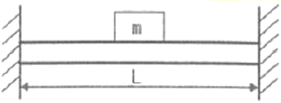
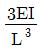
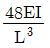
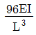
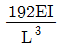
(정답률: 69%)
68. 감쇠가 있는 자유진동에서 임계감쇠계수 Cc(ζ=1)를 표현한 식으로 옳은 것은? (단, Ce : 감쇠계수, m : 질량, k : 스프링 정수, ωn: 고유각진동수, ζ : 감쇠비)
- Cc=2Ceζ
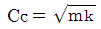
- Cc=mωn
- Cc=2mωn
(정답률: 75%)
69. 방진재료로 금속스프링을 사용하는 경우 로킹 모션(rocking motion)이 발생하기 쉽다. 이를 억제하기 위한 방법으로 틀린 것은?
- 기계 중량의 1~2배 정도의 가대를 부착한다.
- 하중을 평형분포 시킨다.
- 스프링의 정적 수축량이 일정한 것을 사용한다.
- 길이가 긴 스프링을 사용하여 계의 무게중심을 높인다.
(정답률: 75%)
70. 그림과 같은 진동계 전체의 등가스프링 상수(Kεq)는?
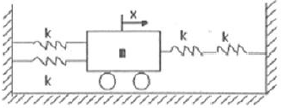
- 2k
- 3k
- 2/3k
- 5/2k
(정답률: 80%)
71. 항상 전달력이 외력보다 큰 경우는? (단, fn: 고유진동수 f:강제진동수)
- f/fn ＜ √2
- f/fn ＞ √2
- f/fn = √2
- f/fn = 1
(정답률: 75%)
72. 원통형 코일스프링의 스프링 정수에 관한 설명으로 옳은 것은?
- 스프링 정수는 전단탄성율에 반비례 한다.
- 스프링 정수는 유효권수에 비례한다.
- 스프링 정수는 소선 직경의 4제곱에 비례한다.
- 스프링 정수는 평균코일 직경의 3제곱에 비례한다.
(정답률: 82%)
73. 기계에너지를 열에너지로 변환시키는 감쇠기구의 종류와 거리가 먼 것은?
- 점섬감쇠(viscous damping)
- 상대감쇠(relative damping)
- 마찰감쇠(coulomb damping)
- 일산감쇠(radiation damping)
(정답률: 62%)
74. 충격에 의해서 가진력이 발생하고 있다. 충격력을 처음의 50%로 감소시키려면 계의 스프링정수는 어떻게 변화되어야 하는가? (단, k는 처음의 스프링 정수)
- 2k
- 1/2k
- 1/3k
- 1/4k
(정답률: 53%)
75. 지반진동 차단 구조물에 관한 설명으로 옳지 않은 것은?
- 지반의 흙, 암반과는 응력파 저항 특성이 다른 재료를 이용한 매질층을 형성하여 지반진 동파 에너지를 저감시키는 구조물이다.
- 개방식 방진구보다는 충진식 방진구가 에너지 차단특성이 좋다.
- 강널말뚝을 이용하는 공법은 저주파수 진동 차단에는 효과가 좋다.
- 방진구의 가장 중요한 설계인자는 방진구의 깊이로서 표면파의 파장을 고려하여 결정하여야 한다.
(정답률: 72%)
76. 진동수 40Hz, 최대가속도 100m/s2인 조화진동의 진폭은?(오류 신고가 접수된 문제입니다. 반드시 정답과 해설을 확인하시기 바랍니다.)
- 0.158m
- 0.316m
- 0.436m
- 0.537m
(정답률: 58%)
77. 스프링정수 K1=20N/m, K2=30N/m인 두스프링을 그림과 같이 직렬로 연결하고 질량 m=3kg을 매달았을 때, 수직방향 진동의 고유 진동수는?
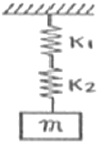
- 1/π
- 2/π
- 4/π
- 8/π
(정답률: 67%)
78. 금속스프링의 특징에 관한 설명으로 옳지 않은 것은?
- 고주파 진동 시 단락되지 않으나, 잦은 보수가 필요하다.
- 일반적으로 부착이 용이하며, 정적 및 동적으로 유연한 스프링을 용이하게 설계할 수 있다.
- 저주파 차진에 좋다.
- 최대변위가 허용된다.
(정답률: 70%)
79. 시간(t)에 따른 변위량(진폭)의 변화 그래프 중 부족감쇠 자유진동과 가장 가까운 것은?
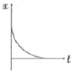
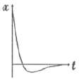
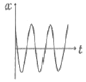
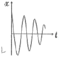
(정답률: 78%)
80. 쇠로 된 금속관 사이의 접속부에 고무를 넣어 진동을 절연하고자 한다. 파동에너지 반사율이 95%가 되면, 전달되는 진동의 감쇠량(dB)은?
- 10
- 13
- 16
- 20
(정답률: 86%)
5과목: 소음진동 관계 법규
81. 소음진동관리법령상 운행차 소음허용기준을 정할 때 자동차의 소음종류별로 소음배출특성을 고려하여 정한다. 운행차 소음종류로만 옳게 나열한 것은?
- 배기소음, 브레이크소음
- 배기소음, 가속주행소음
- 경적소음, 브레이크소음
- 배기소음, 경적소음
(정답률: 79%)
82. 소음진동관리법령상 인정을 면제할 수 있는 자동차에 해당하지 않는 것은?
- 주한 외국군대의 구성원이 공무용으로 사용하기 위하여 반입하는 자동차
- 여행자 등이 다시 반출할 것을 조건으로 일시 반입하는 자동차
- 연구기관 등이 자동차의 개발이나 전시 등을 목적으로 사용하는 자동차
- 외국에서 국내의 공공기관이나 비영리단체에 무상으로 기증하여 반입하는 자동차
(정답률: 69%)
83. 다음은 소음진동관리 법규상 자동차의 종류에 관한 사항이다. ( )안에 가장 적합한 것은? (단, 2015년 12월 8일 이후 제작되는 자동차)
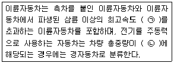
- ㉠ 40km/h ㉡ 2.0톤 미만
- ㉠ 40km/h ㉡ 1.5톤 미만
- ㉠ 50km/h ㉡ 2.0톤 미만
- ㉠ 50km/h ㉡ 1.5톤 미만
(정답률: 83%)
84. 소음진동관리법규상 소음지도 작성기간의 시작일은 소음지도 작성계획의 고시 후 얼마가 경과한 날로 하는가?
- 7일
- 15일
- 1개월
- 3개월
(정답률: 74%)
85. 소음진동관리법규상 시ㆍ도지사 등은 배출시설에 대한 배출허용기준에 적합한지 여부를 확인하기 위하여 필요한 경우 가동상태를 점검 할 수 있으며 이를 검사기관으로 하여금 소음ㆍ진동 검사를 하도록 지시할 수 있는 바, 이를 검사할 수 있는 기관으로 거리가 먼 것은?
- 국립환경과학원
- 광역시ㆍ도의 보건환경연구원
- 지방환경청
- 환경보전협회
(정답률: 87%)
86. 소음진동관리법규상 운행자동차 종류에 따른 ㉠ 배기소음과 ㉡ 경적소음의 허용기준으로 옳은 것은? (단, 2006년 1월 1일 이후에 제작되는 자동차 기준)
- 경자동차 : ㉠ 100dB(A) 이하, ㉡ 100dB(C) 이하
- 소형승용자동차 : ㉠ 100dB(A) 이하, ㉡ 110dB(C) 이하
- 중형화물자동차 : ㉠ 1⑤dB(A) 이하, ㉡ 110dB(C) 이하
- 이륜자동차 : ㉠ 1⑤dB(A) 이하, ㉡ 112dB(C) 이하
(정답률: 84%)
87. 소음진동관리법규상 측정망 설치계획에 관한 사항으로 거리가 먼 것은?
- 측정망설치계획에는 측정소를 설치할 건축물의 위치가 명시되어 있어야 한다.
- 측정망설치계획의 고시는 최초로 측정소를 설치하게 되는 날의 1개월 이전에 하여야 한다.
- 측정망설치계획에는 측정망의 배치도가 명시되어 있어야 한다.
- 시ㆍ도지사가 측정망설치계획을 결정ㆍ고시하려는 경우에는 그 설치위치 등에 관하여 환경부장관의 의견을 들어야 한다.
(정답률: 56%)
88. 소음진동관리법규상 소음배출시설기준에 해당하지 않는 것은? (단, 동력기준시설 및 기계기구)
- 22.5kW 이상의 변속기
- 15kW 이상의 공작기계
- 22.5kW 이상의 제분기
- 37.5kW 이상의 압연기
(정답률: 75%)
89. 소음진동관리법규상 소음도표지에 관한 사항으로 거리가 먼 것은?
- 색상 : 회색판에 검은색 문자를 쓴다.
- 크기 : 75mm × 75mm를 원칙으로 한다.
- 재질 : 쉽게 훼손되지 아니하는 금속성이나 이와 유사한 강동의 재질을 쓴다.
- 제작사명, 모델명도 소음도 표지에 기재되어야 한다.
(정답률: 75%)
90. 소음진동관리법령상 소음진동배출시설의 설치신고 또는 설치허가 대상에서 제외되는 지역이 아닌 것은? (단, 별도로 시ㆍ도지사가 환경부장관의 승인을 받아 지정ㆍ고시한 지역 등은 제외)
- 산업입지 및 개발에 관한 법률에 따른 산업단지
- 국토의 계획 및 이용에 관한 법률 시행령에 따라 지정된 전용공업지역
- 자유무역지역의 지정 및 운영에 관한 법률에 따라 지정된 자유무역지역
- 도시 및 주거환경개선법률에 따라 지정된 광역도시개발지역
(정답률: 58%)
91. 소음진동관리법규상 시장ㆍ군수ㆍ구청장 등이 폭약의 사용으로 인한 소음ㆍ진동피해를 방지할 필요가 있다고 인정하여 지방경차청장에게 폭약사용 규제요청을 할 때 포함하여야 할 사항으로 가장 거리가 먼 것은?
- 폭약의 종류
- 사용시간
- 사용횟수의 제한
- 발파공법 등의 개선
(정답률: 47%)
92. 다음은 소음진동관리법규상 운행차 정기검사의 소음도 측정방법 중 배기소음 측정기준이다. ( )안에 알맞은 것은?
- ㉠ 75% ㉡ 4초
- ㉠ 90% ㉡ 4초
- ㉠ 75% ㉡ 30초
- ㉠ 90% ㉡ 30초
(정답률: 79%)
93. 소음진동관리법규상 소음진동배출허용기준 초과와 관련하여 시ㆍ도지사 등이 개선명령기간 내에 명령받은 조치를 완료하지 못한 자는 그 신청에 의해 얼마의 범위내에서 그 기간을 연장할 수 있는가?
- 6개월의 범위
- 1년의 범위
- 1년 6개월의 범위
- 2년의 범위
(정답률: 80%)
94. 소음진동관리법상 사용되는 용어의 뜻으로 옳지 않은 것은?
- 교통기관 : 기차ㆍ자동차ㆍ전차ㆍ도로 및 철도 등을 말한다. 다만, 항공기와 선박은 제외
- 진동 : 기계ㆍ기구ㆍ시설, 그 밖의 물체의 사용으로 인하여 발생하는 강한 흔들림
- 방진시설 : 소음ㆍ진동 배출시설이 아닌 물체로부터 발생하는 진동을 없애거나 줄이는 시설로서 환경부령으로 정하는 것
- 소음발생건설기계 : 건설공사에 사용하는 기계 중 소음이 발생하는 기계로서 국토교통부령으로 정하는 것
(정답률: 77%)
95. 소음진동관리법상 시ㆍ도지사 등이 생활소음ㆍ진동의 규제기준을 초과한 자에게 작업시간의 조정 등을 명령하였으나, 이를 위반한 자에 대한 벌칙기준으로 옳은 것은?
- 6개월 이하의 징역 또는 500만원 이하의 벌금에 처한다.
- 1년 이하의 징역 또는 1천만원 이하의 벌금에 처한다.
- 2년 이하의 징역 또는 2천만원 이하의 벌금에 처한다.
- 3년 이하의 징역 또는 3천만원 이하의 벌금에 처한다.
(정답률: 83%)
96. 소음진동관리법규상 야간 철도진동의 관리기준(한도)으로 옳은 것은? (단, 공업지역)
- 60dB(V)
- 65dB(V)
- 70dB(V)
- 75dB(V)
(정답률: 50%)
97. 소음진동관리법규상 300만원 이하의 과태료 부과대상에 해당되는 위반사항으로 거리가 먼 것은?
- 환경기술인을 임명하지 아니한 자
- 환경기술인의 업무를 방해하거나 환경기술인의 요청을 정당한 사유 없이 거부한 자
- 기준에 적합하지 아니한 휴대용음향기기를 제조ㆍ수입하여 판매한 자
- 환경기술인 등의 교육을 받게 하지 아니한자
(정답률: 48%)
98. 소음진동관리법규상 환경기술인을 두어야 할 사업장 및 그 자격기준으로 옳지 않은 것은? (단, 기사 2급은 산업기사로 본다.)
- 환경기술인 자격기준 중 소음ㆍ진동기사 2급은 기계분야기사ㆍ전기분야기사 각 2급 이상의 자격소지자로서 환경분야에서 1년 이상 종사한 자로 대체할 수 있다.
- 방지시설 면제사업장은 대상 사업장의 소재지역 및 동력규모에도 불구하고 해당 사업장의 배출시설 및 동력규모에도 불구하고 해당 사업장의 배출시설 및 방지시설 업무에 종사하는 피고용인 중에서 임명할 수 있다.
- 총동력합계는 소음배출시설 중 기계ㆍ기구 동력의 총합계를 말하며, 대수기준시설 및 기계ㆍ기구와 기타 시설 및 기계ㆍ기구는 제외한다.
- 환경기술인으로 임명된 자는 당해 사업장에 상시 근무하여야 한다.
(정답률: 69%)
99. 소음진동관리법상 환경부장관은 법에 의한 인정을 받아 제작한 자동차의 소음이 제작차소음허용기준에 적합한지의 여부를 확인하기 위하여 대통령령으로 정하는 바에 따라 검사를 실시하여야 하는데, 이 때 검사에 드는 비용은 누가 부담하는가?
- 국가
- 지방자치단체
- 자동차제작자
- 검사기관
(정답률: 79%)
100. 소음진동관리법규상 도시지역 중 상업지역의 낮(06:00~22:00) 시간대 공장진동 배출 허용기준은?
- 60dB(V) 이하
- 65dB(V) 이하
- 70dB(V) 이하
- 75dB(V) 이하
(정답률: 43%)
VAL = 20log10(a/a0)
여기서 a는 측정된 진동가속도 진폭이고, a0은 기준 진동가속도 진폭으로서, 1×10-6m/sec2이다.
따라서, VAL = 20log10(2×10-2/1×10-6) = 20log10(2×104) ≈ 63dB
정답이 "63dB"인 이유는, 진동가속도 진폭이 2×10-2m/sec2일 때, 해당 진동의 진동 가속도레벨(VAL)이 약 63dB이기 때문이다.